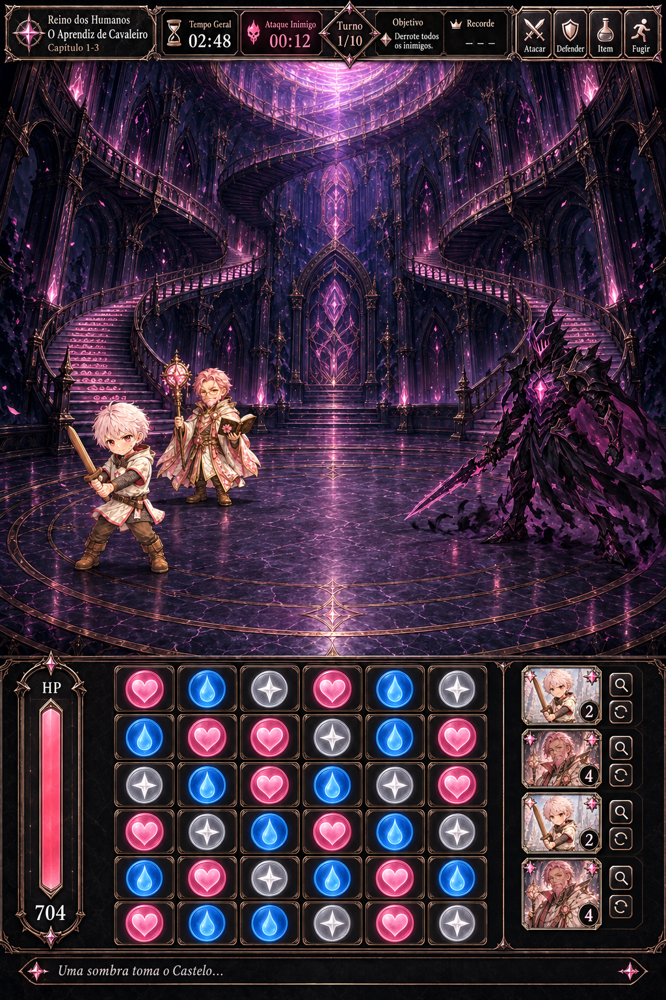
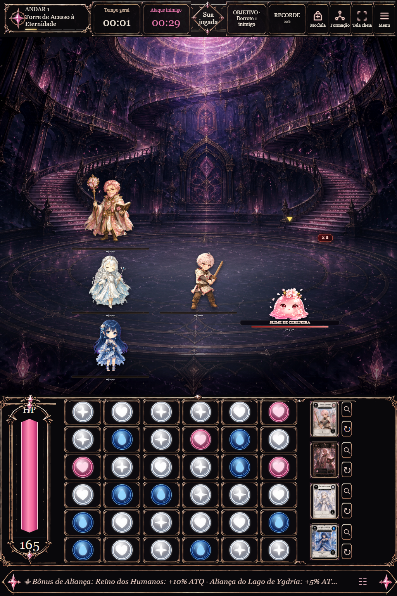
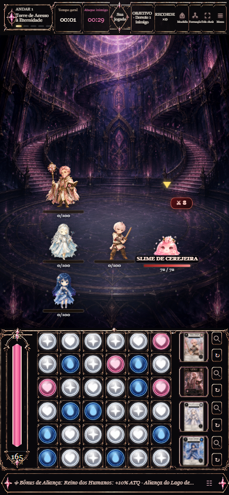

A imagem do jogo foi capturada no navegador, com sprites, tabuleiro e controles reais. Personagens, formação, adversário e valores dependem da partida. As cartas aparecem inteiras; os controles mantêm as funções existentes do jogo.